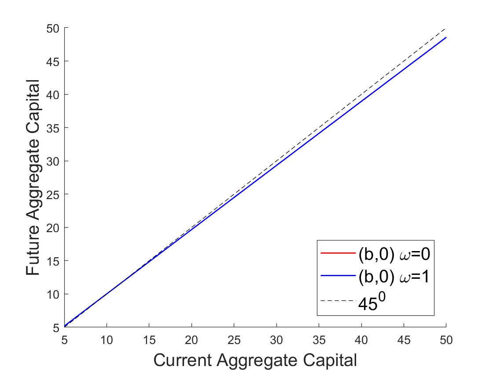

Cao (2020): Continuum versus Finite Agents in Krusell and Smith (1998)
Our toolbox is designed to solve models with only a finite number of agents, or more precisely, a finite number of agent types. However, as noted in Cao (2020), these models are important special cases of fully heterogenous agent models with a continuum of agents subject to both idiosyncratic and aggregate shocks such as the one Krusell and Smith (1998). In particular, when idiosyncratic shocks are perfectly persistent in Krusell-Smith type of models, these models become effectively the finite-agent models that could be solved using our toolbox. In this example, we solve and compare the aggregate outcomes in this special case of the model in Krusell and Smith (1998) to the outcomes in their original model where idiosyncratic shocks are not perfectly persistent.
The Model
There are two representative agents \(h\in\left\{ 1,2\right\}\) in the economy of mass \(\frac{1}{2}\) each. The agents share the same inter-temporal expected utility
In each period, the exogenous aggregate state of the economy is a pair of states \(\left(s,i\right)\) where \(s\in\left\{ b,g\right\}\) and \(i\in\left\{ 0,1\right\}\). State \(s\) determines the aggregate productivity \(A(s)\) and aggregate labor supply \(L(s)\). The aggregate production function is Cobb-Douglas:
where \(K\) and \(L\) are aggregate capital and labor.
State \(i\) determines which agent is employed. If \(i=0\) then agent \(1\) is unemployed and agent \(2\) is employed, and vice versa for \(i=1\). This approximation of a fully idiosyncratic income process using a two agent income process is similar to the approximation in Heaton and Lucas (1996). The employed agent has \(2(1-\upsilon)L(s)\) units of labor and the unemployed agent has \(2\upsilon L(s)\) units of labor. \(\upsilon\) stands for unemployment transfers by the government and is set at \(7\%\).
Markets are incomplete as agents can only invest in capital, subject to short-sale constraint. So the sequential budget constraint of the agents is:
where \(r_t\) and \(w_t\) are market rental rate of capital and wage.
Because the agents’ problems are concave maximization problems, the first-order conditions are necessary and sufficient for optimality. In particular, let \(\lambda^h_t\) denote the Lagrange multiplier on agent \(h\)’s short-sale constraint, then the Euler’s equation and complementary-slackness condition should hold in equilibrium:
In equilibrium, markets for capital and labor clear (and the good market clears by Walras’ law):
To solve for recursive equilibrium in this economy, we use aggregate capital \(K_t\) and the wealth share of agent’s 1, \(\omega_t = \frac{k^1_t}{K_t}\), as endogenous state variables.
The gmod file
The model is solved with Cao2020KS.gmod
1% Parameters
2parameters beta delta alpha sigma;
3beta=0.99; % discount factor
4delta=0.025;
5alpha=0.36;
6sigma=1.0;
7PrintFreq = 10;
8SaveFreq = 50;
9SIMU_RESOLVE=0; SIMU_INTERP=1;
10
11% States
12var_state K X;
13XPts = 21;
14XMin=0.0;
15XMax=1.0;
16X=linspace(XMin,XMax,XPts);
17
18KPts = 21;
19KMin=5.0;
20KMax=50.0;
21K=exp(linspace(log(KMin), log(KMax), KPts));
22
23% Shocks
24shock_num = 4;
25
26var_shock z e1 e2 L;
27% Set the length to be shock_num
28z=[0.99 1.01 0.99 1.01];
29L=[0.2944 0.3140 0.2944 0.3140];
30e1=[0.07*2*L(1) 0.07*2*L(2) 0.93*2*L(1) 0.93*2*L(2)];
31e2=[0.93*2*L(1) 0.93*2*L(2) 0.07*2*L(1) 0.07*2*L(2)];
32
33% Any intermediate steps can be done
34EZTrans = [
35 0.5250, 0.3500, 0.0312, 0.0938;
36 0.0389, 0.8361, 0.0021, 0.1229;
37 0.0938, 0.0312, 0.2917, 0.5833;
38 0.0091, 0.1159, 0.0243, 0.8507
39 ];
40% Convert to Pr((z,e)->(z',e'))
41EZTrans = reshape(EZTrans,[2 2 2 2]);
42ZETrans = permute(EZTrans,[2 1 4 3]);
43ZETrans = reshape(ZETrans,[4 4]);
44shock_trans = ZETrans;
45
46% Tensor variables
47var_tensor r w budget1 budget2;
48% Notice use dot operator
49r = alpha*z.*(K./L).^(alpha-1);
50w = (1-alpha)*z.*(K./L).^alpha;
51budget1 = (1-delta+r).*(2*K).*(1-X) + w.*e1;
52budget2 = (1-delta+r).*(2*K).*X + w.*e2;
53
54% Endogenous variables, bounds, and initial values
55var_policy c1 c2 Kp Xp lambda1 lambda2;
56% Set bound of endogenous variable
57% note var_tensor can be used (budget1 budget2)
58% note scalar defined before can be used (KMax)
59inbound c1 0 budget1;
60inbound c2 0 budget2;
61inbound Kp 1e-12 10*KMax;
62inbound Xp 0 1;
63inbound lambda1 0 1;
64inbound lambda2 0 1;
65
66initial c1 budget1;
67initial c2 budget2;
68initial Kp (KMin+KMax)/2;
69initial Xp 0.5;
70
71var_aux kp1 kp2;
72
73var_interp c1Future c2Future;
74initial c1Future budget1
75initial c2Future budget2
76c1Future = c1;
77c2Future = c2;
78
79var_output Xp Kp kp1 kp2;
80
81model;
82 % Budget constraints
83 kp1 = budget1 - c1;
84 kp2 = budget2 - c2;
85
86 % Flow marginal utility
87 upC1 = c1^-sigma;
88 upC2 = c2^-sigma;
89
90 % rhs of the Euler equation
91 rhs1 = lambda1;
92 rhs2 = lambda2;
93
94 % Variable with prime is future variable
95 r' = alpha*z'*(Kp/L')^(alpha-1);
96 % Vector interpolation
97 [c1Next',c2Next'] = GDSGE_INTERP_VEC'(Kp,Xp);
98 % Note how to use the NDSGE_EXPECT operator
99 rhs1 = rhs1 + GDSGE_EXPECT{ beta*(1-delta+r')*c1Next'^(-sigma)/upC1} ;
100 rhs2 = rhs2 + GDSGE_EXPECT{ beta*(1-delta+r')*c2Next'^(-sigma)/upC2} ;
101
102 equations;
103 % Evolution of Kp
104 1 - (kp1+kp2)/(Kp*2);
105 % Evolution of Xp
106 Xp - kp2/(Kp*2);
107 1 - rhs1;
108 1 - rhs2;
109 kp1 / (2*Kp) * lambda1;
110 kp2 / (2*Kp) * lambda2;
111 end;
112end;
113
114simulate;
115 num_periods = 10000;
116 initial K 10
117 initial X 0.5
118 initial shock 1
119 var_simu kp1 kp2;
120 K' = Kp;
121 X' = Xp;
122end;
Results
The parameters are taken from Krusell and Smith (1998, Section 2). In particular, the discount rate and the production parameters are:
The aggregate productivity and aggregate labor supply are:
with the transition matrix \(\pi=\left[\pi_{ss'ii'}\right]\), directly taken from Section 2 in Krusell and Smith (1998):
In this transition matrix, the rows and columns \(\left\{ 1,2,3,4\right\}\) correspond to states \(\left\{ \left(b,0\right),\left(b,1\right),\left(g,0\right),\left(g,1\right)\right\}\).
The following figure shows next period aggregate capital, \(K_{t+1}\) as a function of current period aggregate capital, \(K_t\), in current state \(\left(b,0\right)\), for two different values of \(\omega\): \(\omega=0\) and \(\omega=1\). The figure shows that future aggregate capital depends not only on current aggregate capital but also on current wealth share \(\omega\) of agent \(1\).

Given the global solution for the recursive equilibrium of the model, we can also simulate forward and carry out a regression exercise as in Krusell and Smith (1998). From \(10,000\)-period simulation (with the first \(1000\) periods dropped), we obtain the following regression results:
in good times and
in bad times. These regression results tell us that, in the simulated paths of the economy, current aggregate capital seems to be a sufficient state variable to forecast future aggregate capital, which Krusell and Smith call an ``approximate aggregation’’ property. However, the figure tells us that this property does not hold globally.
As a comparison, we also solve the Krusell and Smith’s model, with the exact parameters above, but in which idiosyncratic shocks are truly idiosyncratic. We obtain the following regression results:
in good times
and in bad times.
The approximate evolution of aggregate capital is not too different in the two-agent economy compared to the Krusell and Smith’s economy. But we observe that the auto-correlation coefficients for log aggregate capital are lower than those in the two-agent economy. The \(R^{2}\) are also slightly higher than in the two-agent economy.
We can also solve the finite-agent version of the model with stochastic discount factors in Krusell and Smith (1998, Section 3). In their model, agents face idiosyncratic shocks that determine their discount factor. The discount factor can be low (\(\underline{\beta}\)) or high (\(\bar{\beta}\)), where:
The transition from one to the other is determined such that the average duration for individual \(\beta\) is \(50\) years, which corresponds to agents’ lifetime.
In the two-agent version of the model, we assume that each agent’s discount factor follows this stochastic process. But the two agents’ discount factors are perfectly negatively correlated. To simplify the exercise, we assume that the two agents have the same labor productivity, which varies with the aggregate state \(s\). The evolution of the aggregate state is the same as in the previous example. The other aggregate state \(i\) determines the agents’ discount rate (\(i=0\) agent 1 has low discount factor and agent 2 has high discount factor and vice versa for \(i=1\)). The evolution of aggregate state \(i\) is independent of the evolution of aggregate state \(s\).
The following figure shows next period aggregate capital, \(K_{t+1}\) as a function of current period aggregate capital, \(K_t\), in state \(\left(b,0\right)\), for two different values of \(\omega\): \(\omega=0\) and \(\omega=1\). The figure shows that future aggregate capital depends mostly on current aggregate capital and does not vary visibly with the current wealth share \(\omega\) of agent 1.
{kind=link}
As in the previous example, from \(10,000\)-period simulation (with the first \(1000\) periods dropped), we obtain the following regression results:
in good times
and in bad times. Because future aggregate capital depends mostly on current aggregate capital, the fitness of the linear regressions is very high.
As in the previous example, these regression results are comparable to the ones in Krusell and Smith’s model in which the discount rates are truly idiosyncratic:
in good times and
in bad times.